BUT NOTE there is inter-cycle dependence
(e.g. model restart files) foo[1] => foo[2]bar[1] => baz[2]
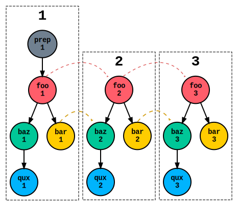
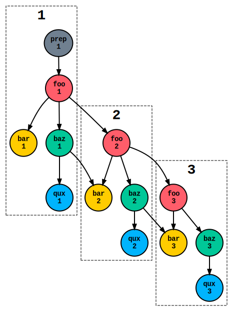
inter-cycle dependence makes this a
continuous workflow not a sequence of single workflows
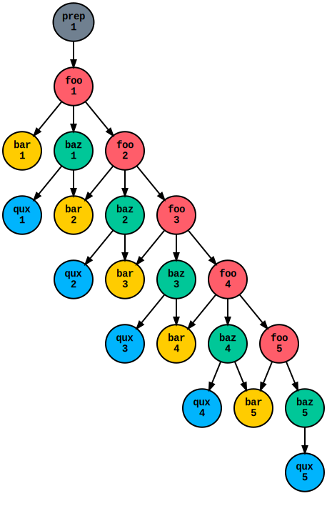
there are no boundaries between cycles
(in real-time operation clock-triggers simply delay a few tasks)
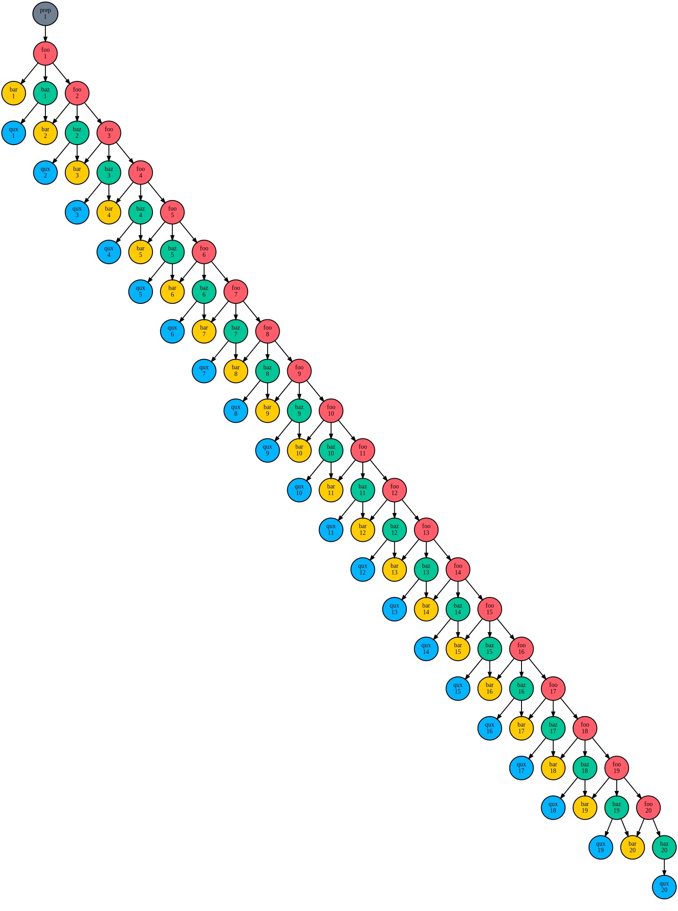
& the workflow may be unbounded...
how can we run
such a system?!
static workflow managers
e.g. most non-NWP workflow schedulers
these have no concept of cycling
but they can run cycling jobs: if each instance of
a cycling job is represented by a different logical task
efficient scheduling: no artificial barriers between "cycle points"
but static workflows must be not too
large and finite in extent
performance and monitoring: users
(like the server) are presented with the entire workflow from start to finish
I'm presenting this because Cylc uniquely peforms like static workflow
manager, with indefinite cycling
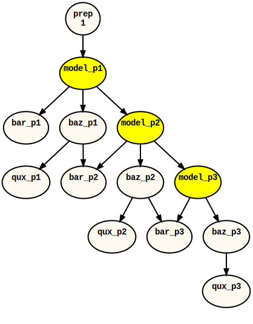
model_p1 runs model.exe for T=1 model_p2 runs model.exe for T=2 model_p3 runs model.exe for T=3 etc.
As far as the abstract workflow is concerned these are all distinct
tasks.
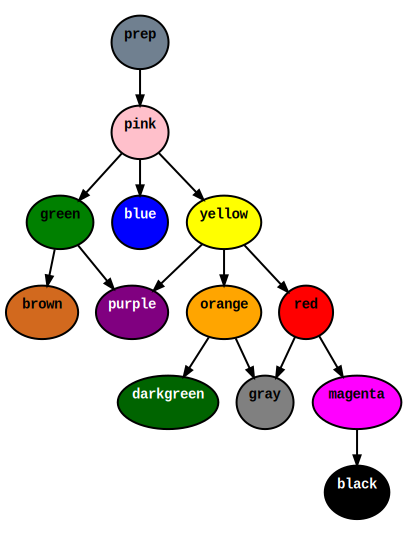
pink.. runs model.exe for T=1 yellow runs model.exe for T=2 red... runs model.exe for T=3 etc.
static (video)
static (image)
This is optimally efficient in the sense that each task can run as soon
as it is ready, regardless of its "cycle point".
fixed cycling workflow managers
sequentially repeat the full single-cycle workflow
e.g. traditional operational NWP workflow schedulers
the obvious way to get an ongoing cycling workflow
fine for clock-limited operational NWP (mostly...!)
can continue indefinitely, but:
this puts artificial hard boundaries between
cycles
(but could have multi-step static workflows at each cycle)
fixed cycling (video)
cycling workflow (image)
free cycling workflow (only Cylc!)
there is no global cycle loop; cycling jobs are represented by cycling
tasks
inter-cycle dependence is explicit
same scheduling efficiency as a static workflow (no artificial hard
boundary between cycles), but can continue indefinitely
it's a single continuous workflow
but we don't need to "know about" the entire workflow;
cylc dynamically generates workflow
By "scheduling efficiency" I mean the workflow engine determines that a
task is ready to run as soon as possible based on only the task's
individual dependencies.
cycling (video)
cycling (image)
static (video)
cycling (video)
cycling, with delay (vid.)
cycling (vid.)
fixed vs free cycling after a delay
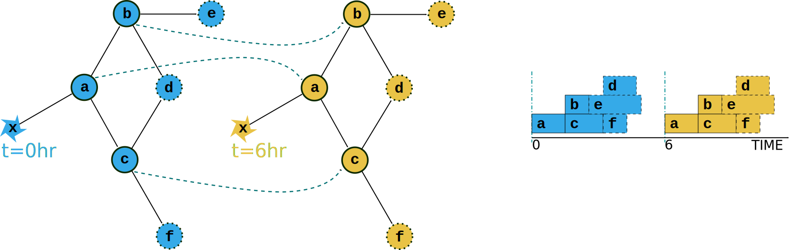
fixed vs free cycling after a delay
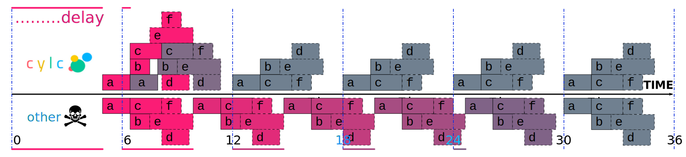
the Cylc client/ server model
Cylc has no central server
cylc run foo (or via GUI) starts a dedicated server for
foo
Cylc servers are daemon processes that:
start automatically when you run a suite
run as you, and they run their tasks as you, i.e.
Cylc does not need elevated system
privileges
shut down automatically when/if your suite finishes
Cylc suites are entirely independent
(but can have cross-triggering)
Cylc clients are GUIs, CLI commands, and task jobs
HTTPS client-server communications (since cylc-7)
advantages of this model
zero admin - no server maintenance, account management etc.
security - no elevated system privileges required
robustness - nothing (Cylc-related) can bring down
all suites
trivial system upgrades - can do one suite at a time
scalability - just add more suite hosts or VMs
ease of use - even for small sites and individuals
you can unpack Cylc on a laptop and run it "out of the box"
disadvantages?
harder to get a global view of multiple independent suites
running on (potentially) multiple hosts
but we have cylc scan (CLI) and cylc gscan
(GUI)
harder to shut down all of your suites at once?
why would you? (there's no central server to upgrade...)
for hardware maintenance, just suspend the VM...
(its safe to kill suites if necessary - just restart later)
harder to give multiple users control over specific suites?
only to *start up* suites (can do if already running)
(use role/service accounts for all operational suites)
Multiple users via passphrase: user and client UUID is logged by the suite.
Cylc suite and job hosts
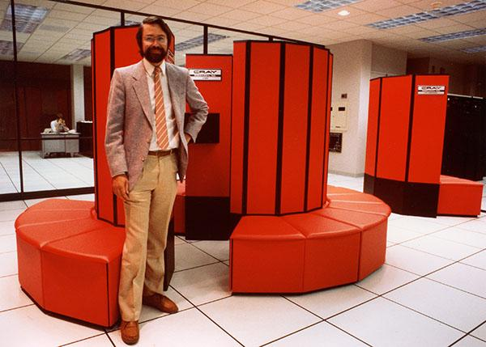
Supercomputer as fashion accessory! Cray XMP early 80s?
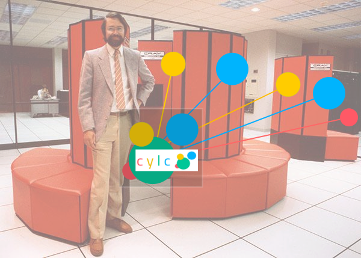
run Cylc on HPC login nodes?
running all your suite daemons and jobs on the HPC is
possible but not
recommended
scalability for large numbers of suites?
HPC is for large massively parallel models and large file IO,
(and often doesn't support other processing very well)
not large(ish) long-running workflow engines
not large large numbers of serial jobs generating large numbers of
small files (Lustre filesystem reportedly doesn't like this)
e.g. ongoing support for up-to-date versions of svn and git, and IDL,
ncl, anything...
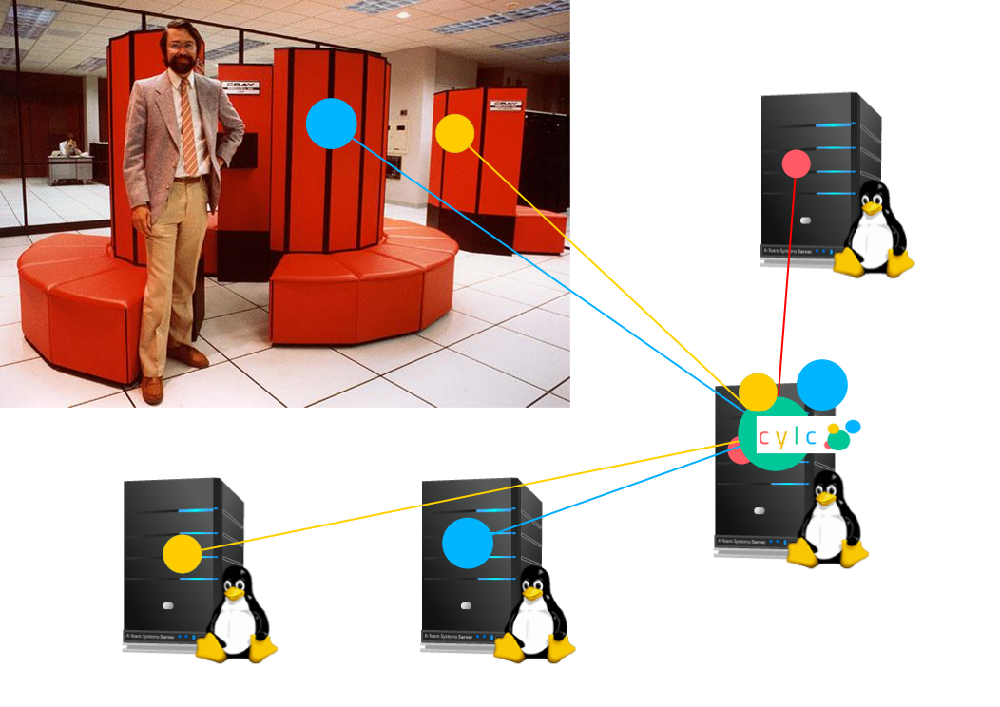
Cylc on Linux, HPC job host (1/3)
run suite daemons on one or more Linux servers or VMs, submitting
appropriate jobs to the HPC
doesn't affect HPC performance
use other Linux hosts for serial jobs
scalable - add more suite servers if required
maintenance - Cylc suites and VMs are transferable
Cylc on Linux, HPC job host (2/3)
two configurations that currently work "out of the box":
direct interaction with remote job hosts
requires non-interactive ssh - "passwordless" or a manually
authenticated persistent ssh tunnel
make remote job hosts look local to Cylc
local PBS (e.g.) submits jobs to remote hosts
requires a shared filesystem (for access to job logs etc.)
(both need HTTPS comms from job host to suite host, or else have to
poll for job status)
Cylc on Linux, HPC job host (3/3)
some high-security sites want local PBS but no
shared filesystem and no ssh to HPC - only rsync?
distributed workflow automation requires *actions* on job hosts
can we get full capability without ssh? (maybe...?)
are these restrictions technically justified?
can't I just rsync a malicious script and run it via PBS?
why not just put Cylc servers inside the HPC trust zone?
what about ssh whitelisting a handful of cylc
commands?
Cylc remote job host interaction
test for shared filesystem
create suite .service directory, copy some of its content
execute Cylc commands:
cylc jobs-submit - submit jobs
cylc jobs-kill - cancel/kill jobs
cylc jobs-poll - query PBS (e.g.) and job status
files
retrieve job logs
remove suite .service directory
(also: file installation via rose suite-run etc.)
Poll jobs:
* manually, on demand
* regularly - if no HTTPS comms to job host
* automatically after specified execution time limit
* automatically for orphaned tasks at restart
PBS integration
(and similarly other batch schedulers/resource managers)
a suite with one task that submits its job to PBS...
Note that full job poll capability requires more than qstat:
if a job did not report in finished but is not in PBS, did it succeed,
fail, or never run? - Cylc can figure this out automatically
Cylc CLI and GUIs
powerful CLI
suites are scriptable via an extensive, powerful CLI
see cylc help
e.g. to simultaneously re-trigger all failed tasks with names starting
with get_* in all 2020* cycle points, in suite
expt1: cylc trigger expt1 2020*/get_*:failed
Cylc GUIs
a suite control GUI - cylc gui
(aka gcylc)
three suite state "views" (graph, dot, text tree)
interact with suite and tasks (re-trigger jobs, view logs
etc.)
task sort order, and filtering by task state and name
a multi-suite multi-host summary GUI - cylc
gscan
powerful web job log viewer - rose bush
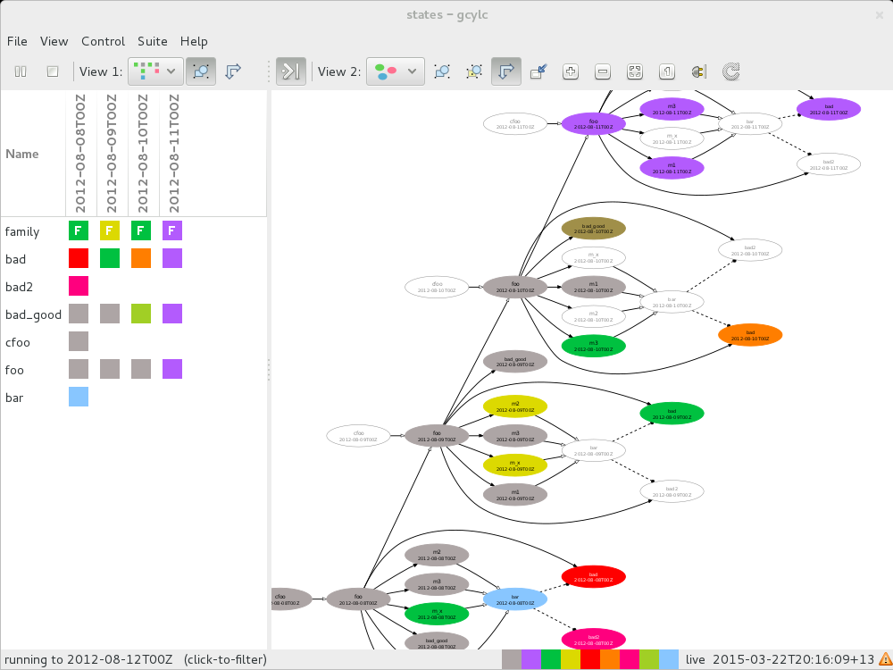
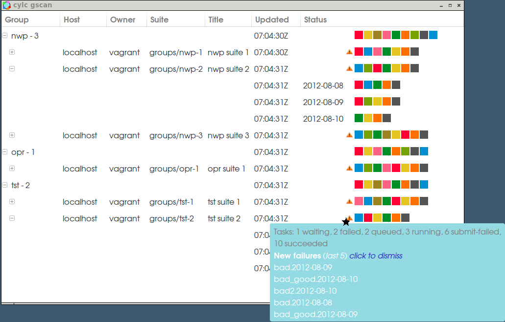
Rose Bush
(note
very outdated screenshot)
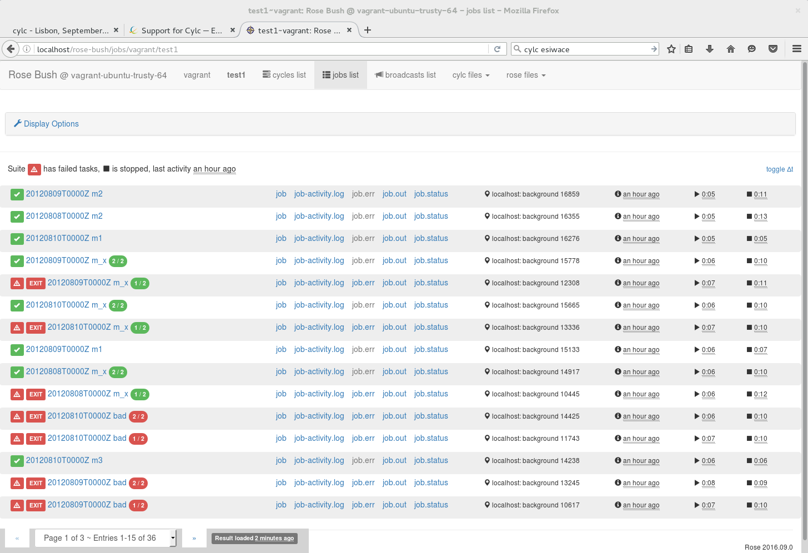
the future: web GUIs
Cylc suites are now web servers
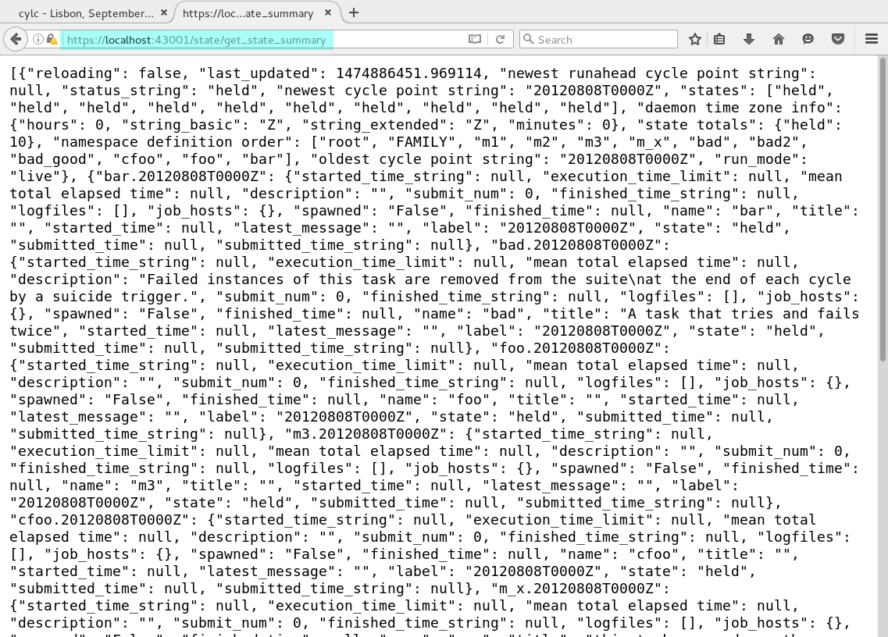
performance
(credit Dave Matthews, Lisbon Workflow Solutions Workshop 2016)
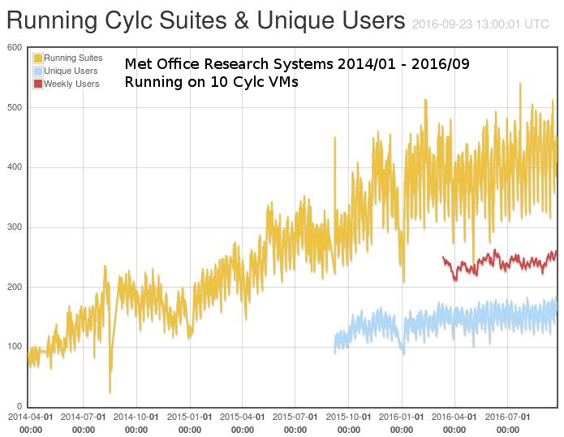
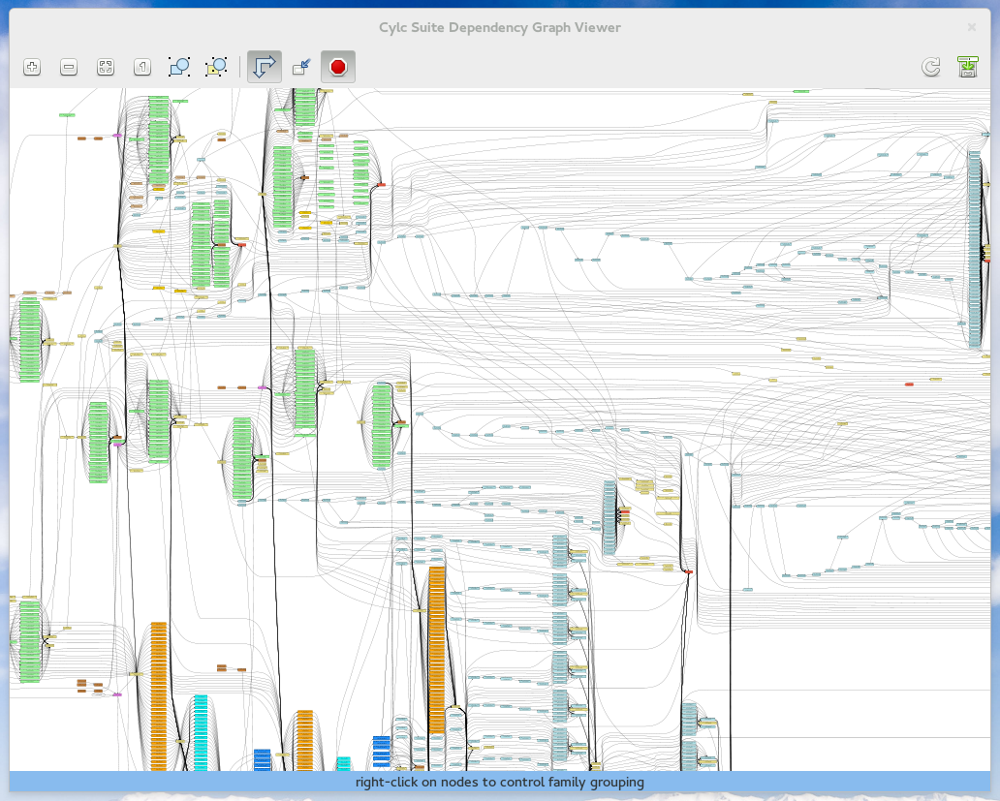
Cylc can easily run this (with dummy tasks!) on a laptop VM
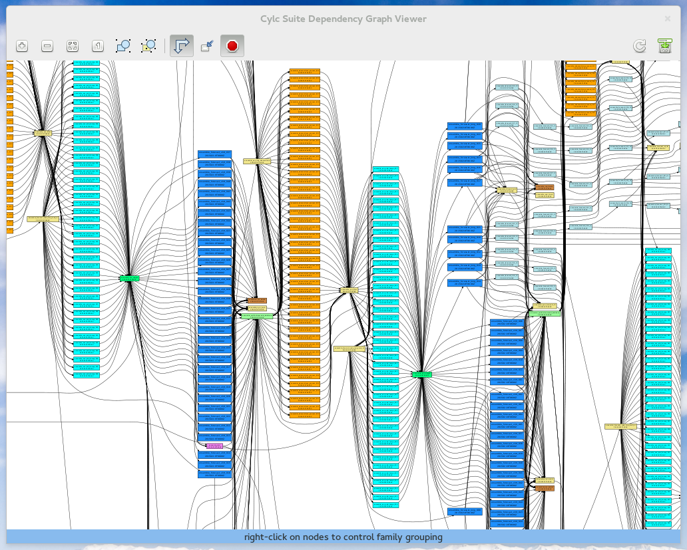
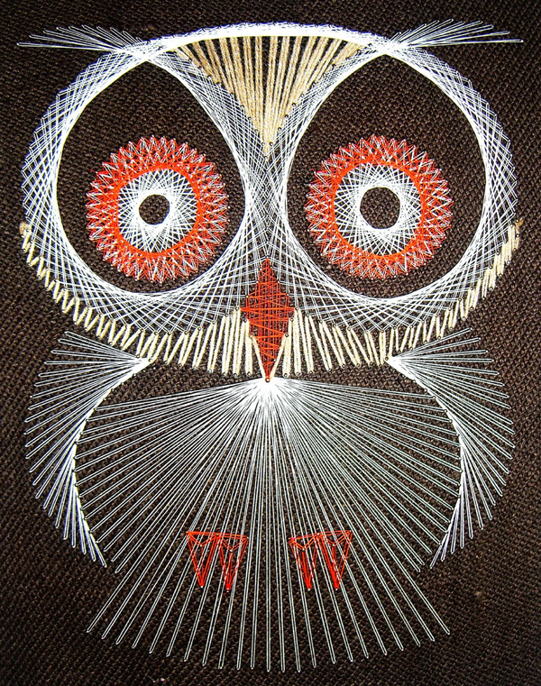
research and operations
Part of Cylc's design brief was to diminish the barrier between research
and operations but providing a workflow engine that can do both. Scientific
modeling systems evolve quickly, and workflows are getting bigger and more
complex - translating them to a different operational framework is very
very difficult.
Cylc is very general-purpose
Cylc can handle NWP, climate, satellite processing, and product generation
workflows, in research & operations
static workflows - for non-cycling or cycling jobs
continuous cycling workflows
date-time cycling
integer cycling
real-time triggering for real-time operations:
clock-triggered
external-triggered - e.g. for satellite processing
This is one of the reasons Met Office chose Cylc - it is a big advantage
to using the same tool across the whole organisation.
research and operations
with Cylc, it is possible to use the same suites in research and
operations, because:
Cylc suites seamlessly transition from continuous cycling behind
the clock, to clock-limited real time operation
operations-specific parts of a workflow can be "factored out"
so: the researchers can do science upgrades etc. in the operational
suites (via a safe collaborative development model) - ~no
translation required between research and operations
organisational efficiency
big savings can be made by:
using the same workflow scheduler across the organisation
leveraging collaboratively developed UM Consortium suites
we are even developing site-portable Cylc suites
research and ops using the same suites (where appropriate)
the effort required to continually translate to a different
operational scheduler is a massive barrier to progress
workflow definition
Cylc uses plain text config files
why? workflow definition by any means is a configuration
job: it configures the behaviour of a program, the workflow engine
maximally human-readable
programmability in this context is for generating parts
of the workflow definition - we get this from embedded Jinja2 code
it allows extremely efficient workflow descriptions
- important as workflows inevitably get more complex (more later...)
compatible with proper modern version control for collaborative
development of complex workflows (need text-based diffs etc.)
config files are clearly structured and can be validated against a
spec
Many of these are UM sites, but Cylc is not in any way UM-specific.
NIWA (NZ) * Met Office (UK) * Max-Planck-Institut für Meteorologie (DE)
Deutches Klimarechenzentrum (DE)
Bureau of Meteorology (AU) * NRL Marine Meteorology Division (US)
557th Weather Wing (US) * Geophysical Fluid Dynamics Laboratory (US)
Meteorological Service Singapore (SG) * South African Weather Service (ZA) * National Centre for Medium Range Weather Forecasting (IN) * Korean Meteorological Administration (KR) * National Center for Atmospheric Research - NCAR (US)
* used with Rose, a framework for
managing meteorological suites.